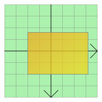

QGraphicsRectItem Class
The QGraphicsRectItem class provides a rectangle item that you can add to a QGraphicsScene. More...
| Header: | #include <QGraphicsRectItem> |
| CMake: | find_package(Qt6 REQUIRED COMPONENTS Widgets) target_link_libraries(mytarget PRIVATE Qt6::Widgets) |
| qmake: | QT += widgets |
| Inherits: | QAbstractGraphicsShapeItem |
Public Types
| enum | anonymous { Type } |
Public Functions
| QGraphicsRectItem(QGraphicsItem *parent = nullptr) | |
| QGraphicsRectItem(const QRectF &rect, QGraphicsItem *parent = nullptr) | |
| QGraphicsRectItem(qreal x, qreal y, qreal width, qreal height, QGraphicsItem *parent = nullptr) | |
| virtual | ~QGraphicsRectItem() |
| QRectF | rect() const |
| void | setRect(const QRectF &rectangle) |
| void | setRect(qreal x, qreal y, qreal width, qreal height) |
Reimplemented Public Functions
| virtual QRectF | boundingRect() const override |
| virtual bool | contains(const QPointF &point) const override |
| virtual bool | isObscuredBy(const QGraphicsItem *item) const override |
| virtual QPainterPath | opaqueArea() const override |
| virtual void | paint(QPainter *painter, const QStyleOptionGraphicsItem *option, QWidget *widget = nullptr) override |
| virtual QPainterPath | shape() const override |
| virtual int | type() const override |
Detailed Description
To set the item's rectangle, pass a QRectF to QGraphicsRectItem's constructor, or call the setRect() function. The rect() function returns the current rectangle.

QGraphicsRectItem uses the rectangle and the pen width to provide a reasonable implementation of boundingRect(), shape(), and contains(). The paint() function draws the rectangle using the item's associated pen and brush, which you can set by calling the setPen() and setBrush() functions.
Note: The rendering of invalid rectangles, such as those with negative widths or heights, is undefined. If you cannot be sure that you are using valid rectangles (for example, if you are creating rectangles using data from an unreliable source) then you should use QRectF::normalized() to create normalized rectangles, and use those instead.
See also QGraphicsPathItem, QGraphicsEllipseItem, QGraphicsPolygonItem, QGraphicsTextItem, QGraphicsLineItem, QGraphicsPixmapItem, and Graphics View Framework.
Member Type Documentation
enum QGraphicsRectItem::anonymous
The value returned by the virtual type() function.
| Constant | Value | Description |
|---|---|---|
QGraphicsRectItem::Type | 3 | A graphics rect item |
Member Function Documentation
void QGraphicsRectItem::setRect(qreal x, qreal y, qreal width, qreal height)
Sets the item's rectangle to the rectangle defined by (x, y) and the given width and height.
This convenience function is equivalent to calling setRect(QRectF(x, y, width, height))
See also rect().
[explicit] QGraphicsRectItem::QGraphicsRectItem(QGraphicsItem *parent = nullptr)
Constructs a QGraphicsRectItem. parent is passed to QAbstractGraphicsShapeItem's constructor.
See also QGraphicsScene::addItem().
[explicit] QGraphicsRectItem::QGraphicsRectItem(const QRectF &rect, QGraphicsItem *parent = nullptr)
Constructs a QGraphicsRectItem, using rect as the default rectangle. parent is passed to QAbstractGraphicsShapeItem's constructor.
See also QGraphicsScene::addItem().
[explicit] QGraphicsRectItem::QGraphicsRectItem(qreal x, qreal y, qreal width, qreal height, QGraphicsItem *parent = nullptr)
Constructs a QGraphicsRectItem with a default rectangle defined by (x, y) and the given width and height.
parent is passed to QAbstractGraphicsShapeItem's constructor.
See also QGraphicsScene::addItem().
[virtual noexcept] QGraphicsRectItem::~QGraphicsRectItem()
Destroys the QGraphicsRectItem.
[override virtual] QRectF QGraphicsRectItem::boundingRect() const
Reimplements: QGraphicsItem::boundingRect() const.
[override virtual] bool QGraphicsRectItem::contains(const QPointF &point) const
Reimplements: QGraphicsItem::contains(const QPointF &point) const.
[override virtual] bool QGraphicsRectItem::isObscuredBy(const QGraphicsItem *item) const
Reimplements: QAbstractGraphicsShapeItem::isObscuredBy(const QGraphicsItem *item) const.
[override virtual] QPainterPath QGraphicsRectItem::opaqueArea() const
Reimplements: QAbstractGraphicsShapeItem::opaqueArea() const.
[override virtual] void QGraphicsRectItem::paint(QPainter *painter, const QStyleOptionGraphicsItem *option, QWidget *widget = nullptr)
Reimplements: QGraphicsItem::paint(QPainter *painter, const QStyleOptionGraphicsItem *option, QWidget *widget).
QRectF QGraphicsRectItem::rect() const
Returns the item's rectangle.
See also setRect().
void QGraphicsRectItem::setRect(const QRectF &rectangle)
Sets the item's rectangle to be the given rectangle.
See also rect().
[override virtual] QPainterPath QGraphicsRectItem::shape() const
Reimplements: QGraphicsItem::shape() const.
[override virtual] int QGraphicsRectItem::type() const
Reimplements: QGraphicsItem::type() const.